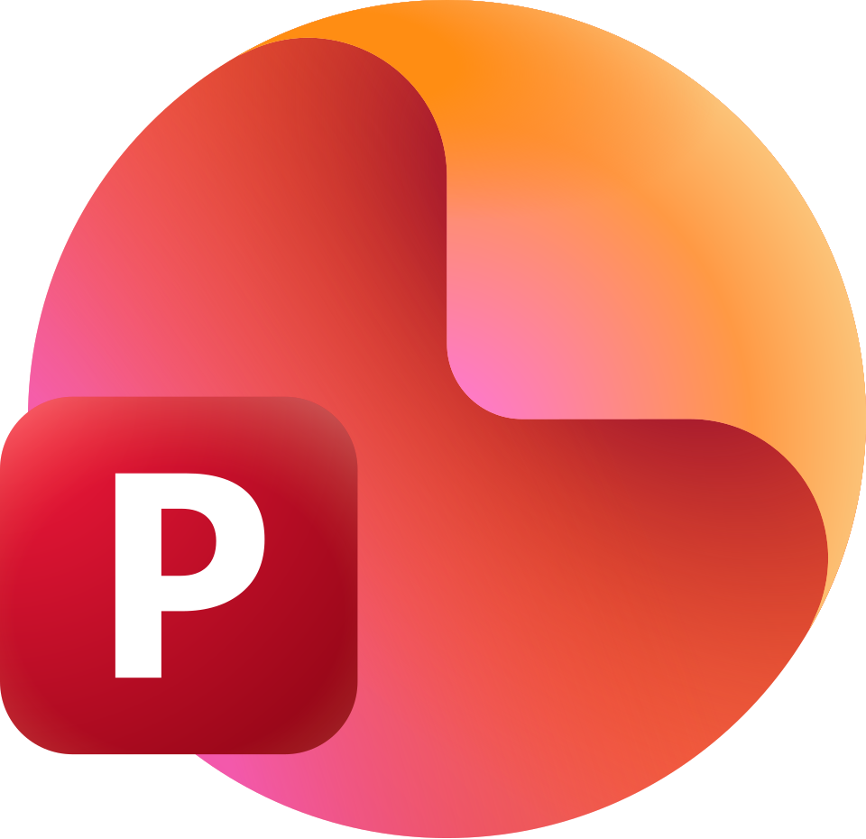

Cut your video into 5-second chunks. The 2026 AI Object Matte tool is incredibly powerful but resource-heavy; keeping segments short prevents the cache from dropping propagation data or lagging.
Import your 5-second segment and drop it into a new composition. Before applying any tools, duplicate your footage layer 6 times (or however many body/clothing parts you need). Rename each layer to match the part you're isolating (e.g., Footage_Hair, Footage_Shirt).
Hide all layers except the one you want to work on. Double-click the active footage layer to open it in the Layer Panel (Object Matte will not work directly in the Composition Panel).
Select the Object Matte Tool from the toolbar (Shortcut: Ctrl + W on Windows, Cmd + W on Mac). Simply click or draw a marquee selection over the specific part (like the shirt). The AI will instantly snap a matte around it.
Scrub through your 5-second timeline to let the AI propagate (track) the object across the frames. Use the Selection Brush Tool to add/subtract areas if the matte slips, and use the Refine Edge Tool specifically on the Hair layer to catch fine details.
Once the matte looks perfect across the 5 seconds, click the Freeze button at the bottom right of the Layer panel. This locks the AI tracking data into cache so it doesn't try to recalculate constantly while you edit.
Go back to your main composition, open the next layer (e.g., Hair) in its respective Layer panel, and repeat the Object Matte selection, propagation, and freezing steps.
Create a new Solid layer (Ctrl + Y / Cmd + Y) and use the color picker to grab your desired color. In the timeline switches/modes columns, look for the TrkMat (Track Matte) dropdown next to your Solid layer. Pick the corresponding isolated layer (e.g., Footage_Shirt) as the matte source.
Once all 5-second segments are complete, drop all finished compositions into one master timeline. Lay down your background layer containing your text and animations at the very bottom of the stack, preview, and export!
v.1.20
2026

2024